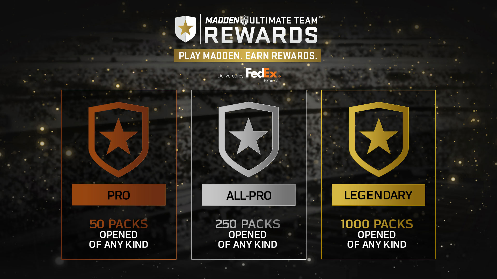

Madden NFL Mobile 17 Hack
Click on "Go To Generator" to get started (Max Coins & Cash)
If you’ve started to play Madden NFL on your mobile device, you’ll understand the struggle of trying to earn cash. I mean you can buy in game currency straight from the developers, but that costs money?! Who wants to spend money on a mobile game that you might not even be playing next week?

We offer our Madden NFL Hack totally free to everyone, you don’t have to spend hours grinding games anymore! Simply use our free hack tool and enjoy all of the benefits that the game has to offer. There are thousands of mobile gamers currently playing this game, and a lot of them have already hacked the game in one way or another; so you’re not going to be able to compete with them naturally. If you want to beat them at their own game, you need to use our hack tool. No purchase required, simply use our hack tool, enter your username and you’ll instantly be very rich (within the game of course!)
Some mobile hack tools are a pain in themselves, taking a lot of time to work – or they require surveys. All of our mobile hack tools are easy to use, and extremely quick. This means you can spend more time enjoying your game, and less time waiting for the hack to be implemented.
This all helps you enjoy your game more, without having to spend hours grinding the game just to make a tiny bit of cash. Mobile games can be very addictive, but they soon get very boring when you can’t easily progress through the game. We aim to fix this problem with our Madden NFL Hack which allows you to generate cash for your account, so you don’t have to spend hours grinding the game in order to get your money.
Madden NFL is one of the best mobile American football games ever made, but it is so hard to progress, whether you’ve noticed or not, you may have not started playing yet – but you’ll realise as soon as you begin to play the game. It is unbelievably hard to progress, which is great if you like to keep mobile games running for months at a time, but we rarely do. Mobiles games are usually played for about a few weeks, and not any longer. Therefore, it is hard to justify spending any real money on it. After all, you worked hard for that money – why waste it on a game you’re not going to play much? A much better idea is to use our free mobile hack, which will give you as much money as you want – allowing you to simply enjoy the game mechanics, without having to worry about earning money. Some believe that this takes the fun out of the game, but we don’t believe this is true. After all, there is nothing to stop you from having a genuine account running on your tablet, and a hacked client on your mobile device.
Our mobile hack is guaranteed to be the easiest to use. Many require you to connect your phone to your computer, or root it. This isn’t ideal, as often it does break your manufacturer warranty, and can often be illegal. This means that if you ever have a problem with that mobile phone, the manufacturer will refuse to sort it out as you have tampered with the operating system of the phone.
The answer is always yes. You can always make a new account and start legit if you want, but what’s the harm with experimenting? You can enjoy playing Madden NFL with unlimited money for a few days, and then when you get bored you can make a new account and start again. It really is that simple. If you don’t have much time to spend playing the game, you can use our Madden NFL Mobile 17 Hack to give yourself plenty of money so that you can spend your time actually playing the game to have fun, rather than playing the game to simply earn in-game currency – as we all know, this isn’t exactly the most fun thing to do!